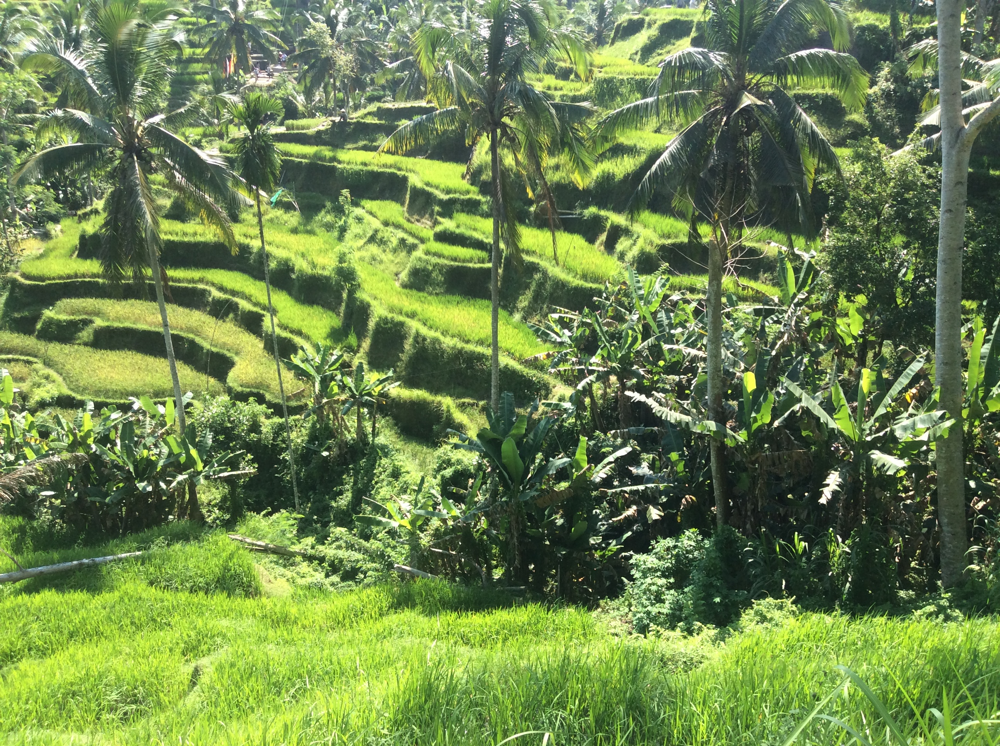

Rice is good for your health. Eat it!
Buy it from Rice inc.
Rice is supposed to be the most important grain with regard to human nutrition and caloric intake.
Rice is the seed of the grass species Oryza sativa (Asian rice) or Oryza glaberrima (African rice). As a cereal grain, it is the most widely consumed staple food for a large part of the world's human population, especially in Asia. It is the agricultural commodity with the third-highest worldwide production (rice, 741.5 million tonnes in 2014), after sugarcane (1.9 billion tonnes) and maize (1.0 billion tonnes).[1] Oryza sativa with small wind-pollinated flowers.
Since sizable portions of sugarcane and maize crops are used for purposes other than human consumption, rice is the most important grain with regard to human nutrition and caloric intake, providing more than one-fifth of the calories consumed worldwide by humans.[2] There are many varieties of rice and culinary preferences tend to vary regionally.
Cooked brown rice from Bhutan
Rice can come in many shapes, colors and sizes.
Rice, a monocot, is normally grown as an annual plant, although in tropical areas it can survive as a perennial and can produce a ratoon crop for up to 30 years.[3] Rice cultivation is well-suited to countries and regions with low labor costs and high rainfall, as it is labor-intensive to cultivate and requires ample water. However, rice can be grown practically anywhere, even on a steep hill or mountain area with the use of water-controlling terrace systems. Although its parent species are native to Asia and certain parts of Africa, centuries of trade and exportation have made it commonplace in many cultures worldwide.
Oryza sativa, commonly known as Asian rice
The traditional method for cultivating rice is flooding the fields while, or after, setting the young seedlings. This simple method requires sound planning and servicing of the water damming and channeling, but reduces the growth of less robust weed and pest plants that have no submerged growth state, and deters vermin. While flooding is not mandatory for the cultivation of rice, all other methods of irrigation require higher effort in weed and pest control during growth periods and a different approach for fertilizing the soil.
The name wild rice is usually used for species of the genera Zizania and Porteresia, both wild and domesticated, although the term may also be used for primitive or uncultivated varieties of Oryza.
"Wikipedia"
"Wikipedia"